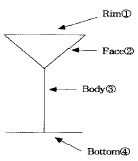
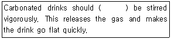
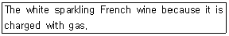
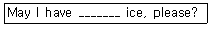

조주기능사 (2003-01-26 기출문제)
1과목: 주류학개론
1. 다음 중 기호 음료(嗜好飮料:Tasting Beverage)가 아닌 것은?
- 오렌지 쥬스(Orange Juice)
- 커피(Coffee)
- 코코아(Cocoa)
- 티(Tea)
(정답률: 90%)

2. 다음 사항 중 시음 3요소라고 할 수 없는 것은?
- Looks good
- Smells good
- Chillings good
- Taste good
(정답률: 75%)
3. 브랜디의 숙성정도의 표시로 그 약자가 옳게 설명되지 못한 것은?
- V - Very
- P - Pale
- S - Special
- X - Extra
(정답률: 66%)
4. 클라렛(Claret)이란?
- 독일산의 유명한 백포도주(White Wine)
- 불란서산 적포도주(Red Wine)
- 스페인산 포트 와인(Port Wine)
- 이태리산 스위트 버머스(Sweet Vermouth)
(정답률: 50%)
5. 샴페인은 무엇으로 만들어지는가?
- 옥수수
- 포도
- 보리
- 밀 또는 감자
(정답률: 88%)
6. 다음 중 리큐르가 아닌 것은?
- Apricot Brandy
- Cherry Brandy
- Cognac Brandy
- Creme de menthe
(정답률: 71%)
7. 올드 톰 진(Old Tom Gin)이란?
- 드라이진에 당분을 섞어서 만든 영국진이다.
- 영국식 오랜 전통의 드라이 진이다.
- 오렌지로 착향시킨 영국진이다.
- 홀랜드(Holland)에서 수출되는 드라이 진이다.
(정답률: 28%)
8. 위스키를 주재로한 피로 회복제의 칵테일인 것은?
- Autumn Leaves
- Coffee Cocktail
- Vail
- Blackthorn
(정답률: 53%)
9. 스노우 볼(Snow Ball) 칵테일의 재료로 적합한 것은?
- 버번 위스키와 계란흰자
- 스카치 위스키와 계란노른자
- 라이 위스키와 체리 브랜디
- 카나디안 위스키와 베네딕틴
(정답률: 69%)
10. Zombie cocktail의 조주에서 주재료로 사용되는 것은?
- Vodka
- Gin
- Scotch
- Rum
(정답률: 21%)
11. 조주 계량상 1 티스푼(Tea spoon or bar spoon)이란?
- 3/8 온스
- 1/2 온스
- 1/8 온스
- 1/3 온스
(정답률: 75%)
12. 데킬라 선라이즈를 만들 때 필요치 않은 것은?
- 데킬라
- 진
- 오렌지 쥬스
- 그레나딘 시럽
(정답률: 69%)
13. 칵테일 조주에 필요 없는 기구는?
- Jigger
- Shaker
- Ice Equipment
- Straw
(정답률: 80%)
14. 보리를 주원료로 해서 만든 발효주(양조주)는 어떤 것인가?
- 와인(Wine)
- 맥주(Beer)
- 브랜디(Brandy)
- 위스키(Whisky)
(정답률: 87%)
15. 다음 중 혼성주(Compounded Liquor)에 속하는 음료(Beverage)는 무엇인가?
- 위스키(Whisky)
- 테킬라(Tequila)
- 럼(Rum)
- 베네딕틴(Benedictine)
(정답률: 79%)
16. 맨하탄, 올드펫션 칵테일에 쓰이며 향료로서 뛰어난 풍미와 향기가 있는 고미제로써 널리 사용되는 것은?
- 클로버(Clove)
- 시나몬(Cinnamon)
- 앙고스트라비터(Angostura Bitter)
- 오렌지 비터(Orange Bitter)
(정답률: 53%)
17. 칵테일 조주기구 중 쉐이커(Shaker)의 분류가 아닌 것은?
- Cap
- Strainer
- Bottom
- Body
(정답률: 75%)
18. Jack Daniel's 라는 테네시 위스키와 버번 위스키의 차이점은?
- 51% 이상의 옥수수를 사용한다.
- 단풍나무 숯으로 여과 과정을 거친다.
- 내부를 불로 그을린 오크통에서 숙성시킨다.
- 미국에서 생산되는 위스키이다.
(정답률: 60%)
19. 스틸와인을 바르게 설명한 것은?
- 발포성 와인
- 식사 전 와인
- 비발포성 와인
- 식사 후 와인
(정답률: 77%)
20. 다음 리큐르(liqueur) 중 베일리스가 생산되는 곳은?
- 스코틀랜드
- 아일랜드
- 잉글랜드
- 뉴질랜드
(정답률: 73%)
21. 다음 중 지방의 특산 전통주가 잘못 연결된 것은?
- 금산 ㅡ 인삼주
- 홍천 ㅡ 옥선주
- 안동 ㅡ 송화주
- 전주 ㅡ 오곡주
(정답률: 47%)
22. 다음 조주기법 중 "Float" 기법이란?
- 재료의 비중을 이용하여 섞이지 않도록 띄우는 방법
- 재료를 믹서기로 갈아서 만드는 방법
- 글라스에 직접 재료를 넣어서 조주
- 혼합하기 쉬운 술끼리 휘저어서 조주
(정답률: 93%)
23. 영국인에 의해 개발된 보건 음료로서 퀴닌(quinine) 성분이 첨가된 것은?
- soda water
- tonic water
- collins water
- ginger ale
(정답률: 56%)
24. 다음 중 Sugar Frost로 만드는 칵테일은?
- Rob Roy
- Kiss of Fire
- Magarita
- Angel's Tip
(정답률: 60%)
25. 1 Gallon은 128oz이면, 1 Pint는 몇 oz인가?
- 32oz
- 16oz
- 26.6oz
- 12.8oz
(정답률: 56%)
26. 식전주로 알맞은 것은?
- 맥주(Beer)
- 드람뷔이(Drambuie)
- 캄파리(Campari)
- 꼬냑(Cognac)
(정답률: 58%)
27. Sloe Gin의 설명 중 옳은 것은?
- 리큐르의 일종이며 Gin의 종류이다.
- Vodka에 그레나딘 시럽을 첨가한 것이다.
- 아주 천천히 분위기있게 먹는 칵테일이다.
- 오얏나무 열매 성분을 Gin에 첨가한 것이다.
(정답률: 67%)
28. 다음 중 Glass의 종류라고 할 수 없는 것은?
- On the rocks glass
- High Ball glass
- Tall glass
- Gin glass
(정답률: 59%)
29. 이태리 와인의 주요 생산지가 아닌 것은?
- Toscana
- Rioja
- Veneto
- Piemonte
(정답률: 67%)
30. 칵테일 조주방법으로 합당하지 못한 것은?
- punching
- blending
- stirring
- shaking
(정답률: 83%)
2과목: 주장관리개론
31. 숙성(aging)시키지 않고 출고판매하는 것은?
- Brandy
- Whisky
- Gin
- Scotch Whisky
(정답률: 56%)
32. 다음 중 전기 브렌더(electirc blender)를 사용하는 칵테일은?
- 맨하탄(Manatten)
- 위스키 사워(Whisky Sour)
- 브러디 매리(Bloody Marry)
- 프로즌 데큐리(Frozen Daiquiri)
(정답률: 58%)
33. 주장에서 사용하는 스텐다드 레시피(Standard Recipe)란 뜻은?
- 표준 검수법
- 표준 저장법
- 표준 조주법
- 표준 봉사법
(정답률: 95%)
34. 영업종료 후 사용하다 남은 쥬스류를 보관하려고 한다. 다음 중 어느 곳이 합당한가?
- 냉동고(freezer)
- 냉장고(refrigerator)
- 술보관장소(bar wells)
- 바-선반(bar shelves)
(정답률: 85%)
35. 식음 재료의 저장관리 원칙 중 틀린 것은?
- 분류저장의 원칙
- 납기보장의 원칙
- 재고순환의 원칙
- 공간활용의 원칙
(정답률: 57%)
36. 위생적인 관점에서 가장 알맞은 얼음처리 방법은?
- 얼음을 글라스에 넣을 때 손으로 집는다.
- 사용했던 얼음은 씻어서 다시 사용할 수 있다.
- 얼음을 내프킨으로 싸서 집는다.
- 얼음을 아이스 텅(ice tong)으로 집는다.
(정답률: 89%)
37. 양주의 알콜 농도는 무엇으로 표시하고 있는가?
- Gr.(Gram)
- Proof
- Volume
- Percent
(정답률: 64%)
38. 와인셀라(Wine Cellar)란?
- 포도주 소매업자
- 포도주 도매업자
- 포도주 저장실
- 포도주를 주재로 한 칵테일 명칭
(정답률: 61%)
39. 바(bar)에서 사용하는 고객내용 카드(guest history card)의 용도는?
- 후불관리 제도용
- 대외 선전용
- 고객 신용조사용
- 대고객 서비스용
(정답률: 39%)
40. 조주용 기물 종류 중 폴러(Pourer)의 설명으로 바른 것은?
- 쓰고 남은 청량음료를 밀폐시키는 병마개
- 칵테일을 마시기 쉽게 하기 위한 빨대
- 술병입구에 끼워 쏟아지는 양을 일정하게 만드는 기구
- 물을 담아놓고 쓰는 손잡이가 달린 물병
(정답률: 73%)
41. 지거(Jigger)를 설명한 것 중 틀린 것은?
- 일명 메져컵(Measure Cup)이라 한다.
- 지거는 양쪽으로 크고 작은 두 개의 삼각형컵으로 구성되어 있다.
- 작은쪽 컵은 1oz 이다.
- 큰쪽의 컵은 3oz 이다.
(정답률: 81%)
42. 영업이 끝난 후에 Inventory는 주로 누가 작성하는가?
- Waiter
- Bartender
- Bar Manager
- Bar Helper
(정답률: 56%)
43. F· I· F· O 란 무엇인가?
- 선입선출
- 선입후출
- 후입선출
- 후입후출
(정답률: 87%)
44. 다음 그림 중 글라스의 부위 명칭 중 틀린 것은?

- Rim
- Face
- Body
- Bottom
(정답률: 74%)
45. 음료의 분류에서 알콜성 음료를 3가지로 분류하는데 포함 되지 않는 것은?
- 발효주
- 증류주
- 강화주
- 혼성주
(정답률: 93%)
46. 사탕수수를 원료로 하며 카리브해의 쿠바, 자메이카 등 섬에서 생산되는 것은?
- Gin
- Tequila
- Vodka
- Rum
(정답률: 57%)
47. 글라스 웨어(Glass Ware)의 취급 요령 중 설명이 틀린 것은?
- Glass Ware는 고객에게 서비스 하기 전 반드시 닦아서 서브한다.
- Glass Ware는 닦을 때 반드시 뜨거운 물에 담그어 닦는다.
- 글라스는 자주 닦으면 좋지 않다.
- 글라스에 냄새가 날 때는 레몬 슬라이스를 물에 넣어서 닦으면 냄새를 제거할 수 있다.
(정답률: 62%)
48. 와인의 보관방법 중 틀린 것은?
- 보관온도를 일정하게 유지한다.
- 병을 세워서 보관한다.
- 병을 눕혀 보관한다.
- 장시간 빛에 노출되지 않도록 한다.
(정답률: 81%)
49. 맥주의 보관방법 중 틀린 것은?
- 장기 보관하면 맛이 좋아진다.
- 맥주가 얼지 않도록 보관한다.
- 직사광선을 피한다.
- 적정온도(4-10도)에 보관한다.
(정답률: 80%)
50. 와인(Wine) 서비스 방법 중 틀린 것은?
- 손님의 오른쪽에서 정중히 서브한다.
- 소멜리어(Sommelier)가 주문을 받는다.
- 와인라벨을 손님에게 설명한다.
- 바텐더(Bartender)가 주문과 서브를 담당한다.
(정답률: 62%)
3과목: 고객서비스영어
51. 다음 ( ) 안에 알맞는 단어는?

- ever
- fast
- never
- usually
(정답률: 36%)
52. 다음 영문에서 나타내는 것은?

- Sherry
- Champagne
- Port
- Vermouth
(정답률: 82%)
53. A fortified yellow or brown wine of Spanish origin with a distinctive nutty flavor.
- Sherry
- Rum
- Vodka
- Bloody mary
(정답률: 74%)
54. "Distilled" 의 의미는?
- 양조된
- 증류된
- 혼합된
- 희석된
(정답률: 72%)
55. It was invented in the 1600s by a Dutch professor of medicine known as Doctor Sylvius, who made an aqua vitae from grain flavored with juniper berries. What is this?
- Gin
- Vodka
- Rum
- Whisky
(정답률: 73%)
56. 다음 문장에서 _______안에 알맞는 단어는?

- many
- any more
- some
- only
(정답률: 71%)
57. 다음 문장의 내용으로 보아 ( ) 안에 동사형을 바르게 변형시킨 항은 어느 것인가?
- pass
- passed
- has passed
- have passed
(정답률: 30%)
58. Which do you like better coffee ( ) beer?
- and
- or
- with
- but
(정답률: 80%)
59. Which drink is prepared with Gin?
- Tom collins
- Rob Roy
- B & B
- Back Russian
(정답률: 69%)
60. I'll have a glass of red wine, please. 의 대답으로 적당하지 않은 것은?
- I'll bring it soon.
- I'll get you it, thanks.
- Are you drinking alone?
- Thank you, OK.
(정답률: 57%)